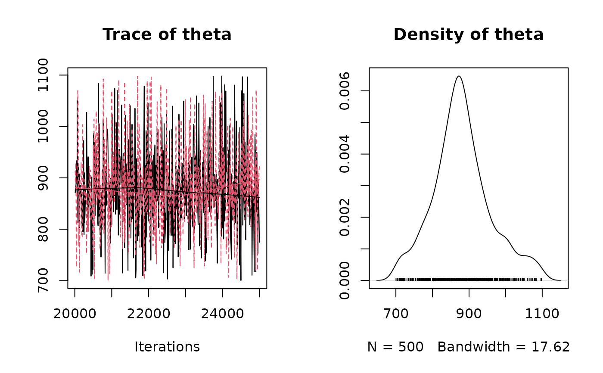

Event Model for Radiocarbon Dates
Usage
eventModel_C14(
M,
s,
studyPeriodMin,
studyPeriodMax,
calibCurve = "intcal13",
numberChains = 2,
numberAdapt = 10000,
numberUpdate = 10000,
variable.names = c("theta"),
numberSample = 50000,
thin = 10
)Arguments
- M
A [`numeric`] vector of measurements.
- s
A [`numeric`] vector of errors.
- studyPeriodMin
A length-one [`numeric`] vector specifying the start time of the study period.
- studyPeriodMax
A length-one [`numeric`] vector specifying the end time of the study period.
- calibCurve
A [`character`] string specifying the calibration curve to be used.
- numberChains
An [`integer`] giving the number of of parallel chains for the model (see [rjags::jags.model()]).
- numberAdapt
An [`integer`] giving the number of iterations for adaptation (see [rjags::jags.model()]).
- numberUpdate
An [`integer`] giving the number of iterations to update the model by.
- variable.names
A [`character`] vector giving the names of variables to be monitored (see [rjags::coda.samples()]).
- numberSample
An [`integer`] giving the number of iterations to monitor (see [rjags::coda.samples()]).
- thin
An [`integer`] giving the thinning interval for monitors (see [rjags::coda.samples()]).
Examples
# \donttest{
eve <- eventModel_C14(
M = 4500,
s = 35,
studyPeriodMin = 700,
studyPeriodMax = 1100,
calibCurve = "intcal20",
numberSample = 5000
)
#> [1] "Bayesian modeling using JAGS"
#> [1] "Update period"
#> [1] "Acquire period"
plot(eve)

# }